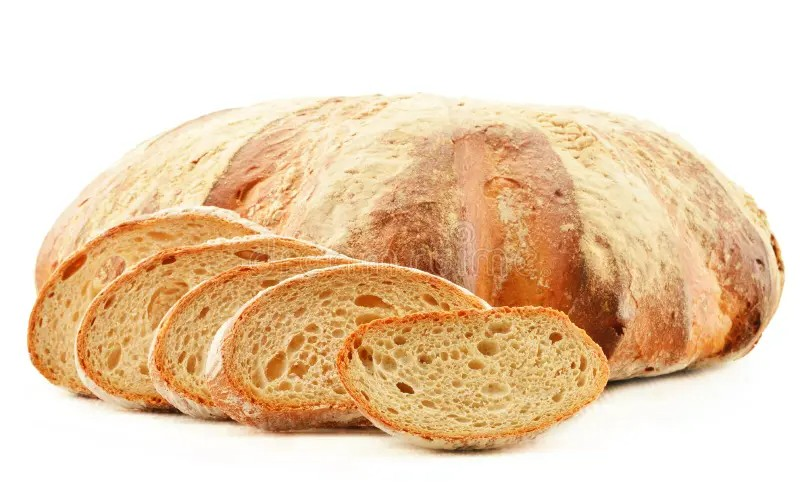

Ik ben trots om te delen waarom onze bakkerij wordt beschouwd als de beste als het gaat om groot brood. Het begint allemaal met onze toewijding aan kwaliteit en passie voor het bakken. Allereerst, onze nadruk op verse ingredienten maakt echt het verschil. We selecteren zorgvuldig de beste bloem, granen en andere componenten om ervoor te zorgen dat elk brood een smaakvolle en luchtige textuur heeft. We hechten veel waarde aan de oorsprong van onze ingredienten en streven naar duurzame en lokale bronnen wanneer mogelijk. Wat ons groot brood echt onderscheidt, is onze ambachtelijke benadering van het bakproces. Onze ervaren bakkers hebben een diepgaand begrip van de deegbereiding en baktechnieken die nodig zijn om brood van topkwaliteit te produceren. Ze volgen traditionele recepten en houden vast aan hoge normen van vakmanschap. Bij elk groot brood dat we maken, draait het om de perfecte balans tussen smaak en textuur. Onze broden zijn knapperig aan de buitenkant en heerlijk zacht aan de binnenkant. Dit wordt bereikt door het zorgvuldig bewaken van het bakproces en het gebruik van de juiste rijstijden. Bovendien hechten we veel waarde aan variëteit. Ons assortiment groot brood omvat traditionele broodsoorten, zoals volkoren, zuurdesem, en meer, evenals speciale smaken die passen bij verschillende culinaire voorkeuren. De liefde voor het bakken is diepgeworteld in onze bakkerij. Elke dag streven we ernaar om groot brood te produceren dat niet alleen heerlijk smaakt, maar er ook prachtig uitziet. Onze bakkers zijn gepassioneerd over hun vak en dat proef je in elk brood dat uit onze ovens komt. Kortom, ons groot brood onderscheidt zich door de aandacht voor detail, de hoogwaardige ingredienten, en de toewijding van onze getalenteerde bakkers. Ik nodig je van harte uit om zelf te proeven waarom ons groot brood als het beste wordt beschouwd.
